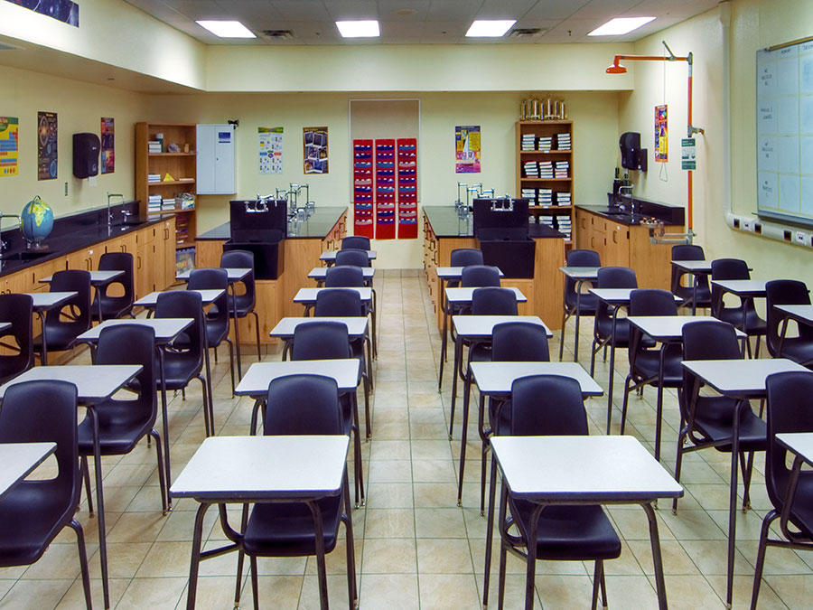

V K PUBLIC SCHOOL

Faculty
VK lays a huge emphasis on enhancing teacher’s skills through continuous professional development courses. NPS believes teachers, like students, are life long learners and conscious of the positive impact teachers can have on in the physical, social, emotional and cognitive domains of student learning.
At VK , we work together with our faculty, like a closely-knit community, to promote a work culture of the highest professional standards.
Faculty List
- Administration
- Mr. Mahendran Balasubramanium ( Principal)
- Ms. Subitha Sankara (Vice Principal)
- Math Department
- Mr. Arun Pandian ( MCA)
- Ms. Subashree(M.Sc.)
- English Department
- Mr. Moorthy K( M.Phil)
- Ms. Revathy Gautham (MA)
- Sports Department
- Mr. Ganesh (B.Sc.) >
- Ms. Babitha (BA)
- Computer Science
- Ms. Sumathi( MCA )
- Ms. Yuvaakshi M (B.TECH)